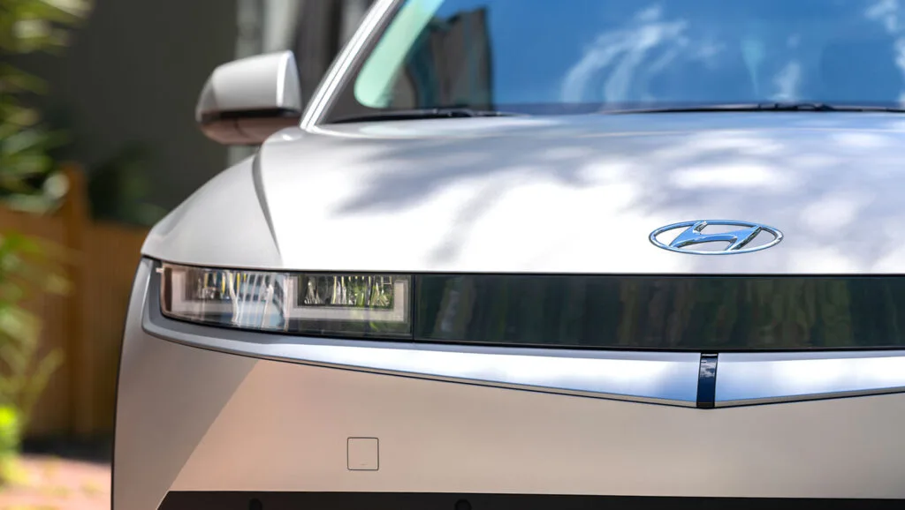
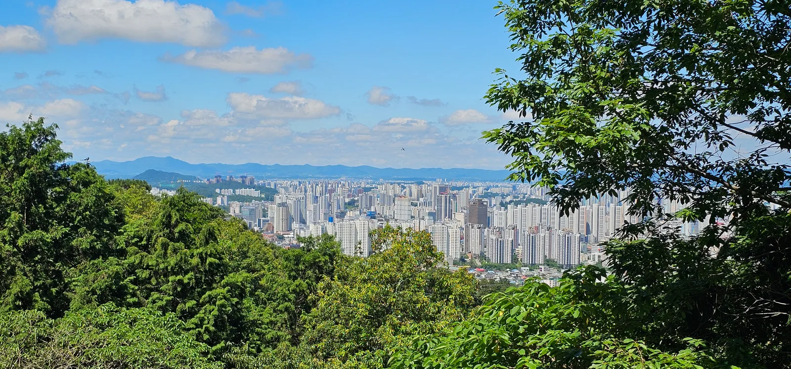

▲ 지난 5월 13일 광주 김대중컨벤션센터에서 열린 '대한민국 자율주행팀' 업무협약식. 국토교통부·광주광역시·한국교통안전공단·현대차그룹·삼성화재·오토노머스에이투지·라이드플럭스 7개 기관이 참여했다. ⓒ 머니투데이방송(MTN)
1. 무슨 사업인가
국토교통부와 광주광역시가 국비 610억 원을 투입해 2026년부터 2028년까지 3년간 자율주행차 200대를 광주 전역에 투입하는 실증도시 사업을 추진한다. 전국 최초로 도시 전체가 자율주행 시범운행지구이자 규제 없는 '메가 샌드박스'로 지정되는 사업으로, 광주 생활권 500.97㎢가 실증 무대가 된다. 올해 하반기 광산구 등 일부 지역에서 시작해 내년까지 광주 5개 구 전역으로 범위를 넓힐 계획이다.
지난 5월 13일 광주 김대중컨벤션센터에서는 국토교통부·광주광역시·한국교통안전공단·현대자동차·삼성화재·오토노머스에이투지·라이드플럭스 등 7개 기관이 참여하는 업무협약식이 열려 'K-자율주행 국가대표팀' 출범이 공식 선포됐다.

▲ 현대차·기아가 공급할 자율주행차는 아이오닉5 양산 모델을 기반으로 카메라 8대, 레이더 1대를 장착한다. 사진은 국내 도로에서 시험 운행 중인 아이오닉5 실증 차량. ⓒ Wikimedia Commons
2. 정부의 2027년 레벨4 로드맵과의 연결고리
광주 실증사업은 단독 프로젝트가 아니라 정부가 추진 중인 '2030 모빌리티 혁신성장 로드맵'의 핵심 축이다. 정부는 2027년까지 운전자나 승객의 조작 없이 차량이 스스로 운행하는 레벨4 완전자율주행 상용화를 목표로 내걸었다. 이를 위해 서울·강원·경남 등 8개 지자체의 자율주행 서비스 확대에도 별도 예산(약 30억 원)을 투입하고 있지만, 광주는 도시 전체를 실증 무대로 삼는 유일한 사례라는 점에서 이 로드맵의 상징적 거점으로 꼽힌다.
실증은 일반 도로, 주택가, 야간 환경 등 실제 시민이 이용하는 생활도로에서 이뤄지며, 유인 자율주행에서 무인 자율주행으로 단계적으로 전환하는 방식을 취한다. 기술 수준과 운영 역량 평가를 거쳐 3개 내외 기업이 참여 기업으로 선정될 예정이다.
| 항목 | 내용 |
|---|---|
| 사업 기간 | 2026년~2028년(3년) |
| 예산 | 국비 610억 원 |
| 투입 차량 | 자율주행차 200대 |
| 실증 범위 | 광주 생활권 500.97㎢(5개 구 전역으로 순차 확대) |
| 주요 참여기관 | 국토교통부, 광주광역시, 한국교통안전공단, 현대차·기아, 삼성화재, 오토노머스에이투지, 라이드플럭스 |
| 상위 정책 | 2027년 레벨4 완전자율주행 상용화(2030 모빌리티 혁신성장 로드맵) |
3. 현대차·기아의 역할과 아트리아 AI
현대차·기아는 이 사업에서 차량 공급과 배차·관제 플랫폼 운영을 동시에 맡는다. 양산차인 아이오닉5에 카메라 8대와 레이더 1대를 장착한 자율주행차 약 200대를 공급하고, 자체 AI 모빌리티 플랫폼 '셔클'을 통해 배차와 관제를 수행한다. 자율주행 기술의 핵심으로는 독자 개발 솔루션 '아트리아 AI'가 꼽히는데, 인식부터 판단·제어까지 자율주행 전 과정을 하나의 AI 모델로 통합 처리하는 'E2E(End-to-End)' 방식을 채택했다. 시나리오 기반의 기존 방식과 달리 예측 불가능한 돌발 상황에 더 유연하게 대응할 수 있다는 게 특징이다.
📍 E2E 방식이란
인지-판단-제어를 별도 모듈로 나눠 처리하던 기존 규칙 기반 자율주행과 달리, E2E(End-to-End) 방식은 카메라·센서 입력부터 최종 조향·가감속 제어까지 하나의 통합 AI 모델이 처리한다. 광주에서 축적되는 실증 데이터는 이 E2E 기술을 고도화하는 학습 자원으로 활용될 예정이다.

▲ 광주에 투입될 자율주행차의 기반 모델인 아이오닉5의 전면 디테일. 양산차에 카메라 8대, 레이더 1대가 추가 장착된다. ⓒ Wikimedia Commons
4. 삼성화재·오토노머스에이투지 등 나머지 참여사
차량·플랫폼 외에 보험·안전 체계 역시 사업의 중요한 축이다. 삼성화재는 자율주행 특화 보험 상품과 사고 책임 체계 설계를 담당하며, 오토노머스에이투지와 라이드플럭스는 각각 자율주행 셔틀·모빌리티 서비스 운영 경험을 바탕으로 기술 실증에 참여한다. 한국교통안전공단은 안전성 평가와 인증 절차를 총괄한다.
정부는 광산구 일대에 미래차 산업단지(약 102만 평)와 모빌리티 기반 신도시(약 30만 평) 조성 계획도 함께 밝혀, 실증사업을 산업 생태계 조성으로 확장하려는 의도를 분명히 하고 있다. 특히 광주는 국내 유일의 국가 AI데이터센터를 보유하고 있어, 이곳의 GPU 자원을 활용해 자율주행차가 수집하는 방대한 주행 데이터를 실시간으로 학습·고도화할 수 있다는 점이 다른 지자체 실증사업과 차별화되는 지점으로 꼽힌다.

▲ 무진고성지에서 내려다본 광주광역시 도심 전경. 실증사업은 이 시가지를 포함한 생활권 500.97㎢ 전역에서 진행된다. ⓒ Wikimedia Commons
5. 넘어야 할 과제
도시 전역, 그것도 주택가와 야간 환경까지 포함한 실증은 국내에서 전례가 없는 규모여서 안전 관리 체계가 핵심 변수로 꼽힌다. 유인 단계에서 무인 단계로 넘어가는 시점과 속도, 사고 발생 시 책임 소재를 규정하는 법·제도 정비가 병행돼야 실제 레벨4 상용화로 이어질 수 있다는 지적이 나온다. 정부와 광주시는 실증 데이터를 축적해 2027년 레벨4 상용화 목표에 반영한다는 계획이지만, 구체적 상용화 지역과 서비스 형태는 아직 확정되지 않았다.
✅ 체크포인트
· 610억 원은 국비 기준이며 지자체·기업 매칭 투자 규모는 별도다
· 200대는 최종 목표치로, 하반기부터 순차 투입돼 단계적으로 늘어난다
· 유인 자율주행에서 무인 전환까지는 안전성 검증 절차가 선행돼야 한다
· 최종 레벨4 상용화 시점(2027년)은 정부 목표치이며 확정된 법적 기한은 아니다

▲ 아이오닉5 양산 모델의 전측면. 현대차·기아는 이 플랫폼을 기반으로 광주 실증용 자율주행차 약 200대를 공급한다. ⓒ Wikimedia Commons
6. 정리
광주광역시는 국비 610억 원을 투입해 2026~2028년 자율주행차 200대를 도시 전역에 투입하는 실증사업에 나선다. 이는 정부의 2027년 레벨4 완전자율주행 상용화 로드맵과 직결된 사업으로, 현대차·기아가 차량 공급과 플랫폼 운영을, 삼성화재·오토노머스에이투지·라이드플럭스가 보험·기술 실증을 나눠 맡는 'K-자율주행 국가대표팀' 체제로 진행된다. 도시 전체를 실증 무대로 삼는 전국 최초 사례인 만큼, 안전성 검증과 제도 정비 속도가 향후 관전 포인트가 될 전망이다.